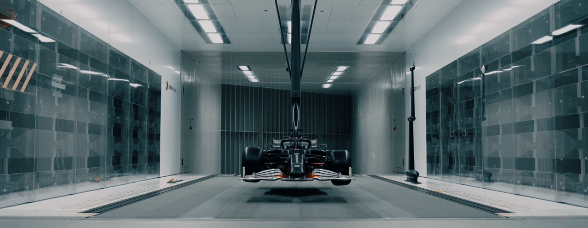

Site pédagogique sur l’aérodynamisme et la physique du sport automobile, entièrement navigable au clavier et compatible lecteurs d’écran.

Photo d’illustration d’une soufflerie. Le contenu principal ci-dessous explique les notions d’aérodynamisme.
Aérodynamisme en sport auto
Le guide pour tout comprendre – clair, structuré et accessible
Pourquoi l’aérodynamisme compte
L’aérodynamisme décrit la façon dont l’air interagit avec la voiture. En compétition, il sert à réduire la traînée
(résistance de l’air) et à augmenter l’appui (force qui plaque la voiture au sol pour améliorer l’adhérence).
Ce site te guide pas à pas, avec des définitions simples, des exemples concrets (F1, WEC) et des schémas décrits.
Lecture au clavier et lecteurs d’écran : titres hiérarchisés, contenus alternatifs, ordre logique.
Contrastes, focus visibles, libellés explicites et liens descriptifs.
Formule simplifiée :
Fd = ½ · ρ · v² · Cd · ALa force de traînée est égale à un demi multiplié par la masse volumique de l’air, multiplié par la vitesse au carré, multiplié par le coefficient de traînée, multiplié par la surface frontale.
Réduire Cd ou la surface frontale A aide à aller plus vite en ligne droite.
Appui (downforce)
L’appui augmente la charge sur les pneus pour améliorer le grip en virage. Ailerons, effet de sol et diffuseur façonnent l’écoulement d’air pour « aspirer » la voiture vers le sol.
L’aérodynamisme est l’un des piliers de la performance en sport automobile. Plus qu’une simple question de
vitesse, il s’agit d’un équilibre subtil entre appui, traînée et efficacité énergétique. Chaque courbe, chaque
aile et chaque diffuseur sont étudiés pour transformer l’air en un véritable allié sur la piste.Qu’est-ce que
l’aérodynamisme en course ?